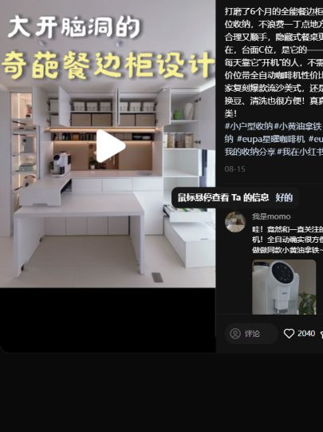
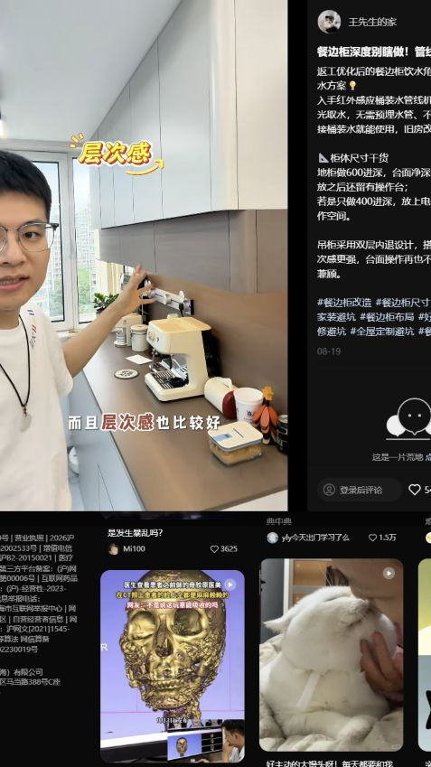

SPACE 02
02 餐厅
现状、需求与预期效果，放在一起讨论。
02 餐厅装修需求
所有尺寸均为参考；施工、定制、开孔和下单以现场实测、实物安装要求及确认图纸为准。列入配置不等于已经购买。
现场实拍


DESIGN INTENT
预期效果
仅展示需求文档中列出的效果图。
AI 照片级效果以 3ds Max 的空间与家具布局为依据，灯光、织物与小摆件用于氛围示意；实物配置以本页需求及设备清单为准。


功能与布局
- 风格定位：现代简约黑白灰，与客厅、阳台及主次卧保持主格调一致。
- 伸缩餐桌竖向摆放，满足 6～10 人用餐。
- 餐边柜容纳饮水机、咖啡机和其他小家电。
硬装与定制
- 实施范围与柜体原则：餐厅侧边柜（餐边柜）由装修公司现场复尺定制，柜体落地自承重，上部收纳由柜体支撑，不挂墙承重。餐桌椅、电器及其他成品软装由业主自购。
- 餐边柜上、下柜组合，配置咖啡设备抽拉托盘、收纳抽屉和玻璃展示格；柜内设备可散热、走线和检修。
- 4 个备用软包凳叠放收纳于玄关随手柜下柜，需要时取到餐厅使用。
家具与设备
“否”按成品选购；“待确认”不代表已决定定制。尺寸以现场实测及最终确认图纸为准。
商品图、规格图及购买链接均为选型参考，不限定购买渠道或最终款式。若有同款且性价比更高的选择、风格更合适的家具，或因现场尺寸、安装条件等客观原因需要调整，可提出替代方案，说明差异及更换原因，经业主确认同意后方可更换。
| 项目 | 数量 | 是否定制 | 参考尺寸 / 选型要求 | 商品图 / 规格参考 | 购买链接（参考） | 备注 |
|---|---|---|---|---|---|---|
| 意式岩板伸缩餐桌 | 1 张 | 否 | 长桌参考：收起 / 半展开 / 全展开长 1600 / 2000 / 2400 mm，宽 900 × 高 750 mm，岩板厚 12 mm；日常 4～6 人、扩展 8～10 人 | 实拍、规格 | 淘宝 | 长桌和圆桌选款未定，按实际空间核对展开和拉椅空间；含配套餐凳；图示可选电磁炉不计入已选配置 |
| 餐椅 | 6 把 | 否 | 未知 | 待选 / 暂无资料 | 待选 | 与餐桌配套 |
| 组合餐边柜 | 1 组 | 是 | 商品图仅作参考，现场复尺定制；整柜宽 2100 × 高 2180 mm；上柜深 350、高 1300 mm，下柜深 500、高 880 mm；左下柜宽 1200、右下柜宽 900 mm；台面厚 12 mm；自由组合，带轨道插座 | 整柜规格、上柜规格、右下柜规格、规格、左下柜规格 | 淘宝 | 下柜放矿泉水桶；图示电器腔宽 450 × 深 410 × 高 468 mm；右下柜抽屉款与移门款为备选组合，按设备和管线核对 |
| 奥克斯即热饮水设备 | 1 台 | 否 | 奥克斯 AUX-GX-D；宽 260 × 深 140 × 高 380 mm（含托盘），机身深 80 mm；即热式、无水箱，可接矿泉水桶 | 实拍&规格 | 京东 | 无水箱、即热式，矿泉水桶取水，无排水；柜下放桶及取水管，电源接餐边柜轨道插座 |
| 咖啡机 | 1 台 | 否 | 具体型号待选 | 待选 / 暂无资料 | 先不买 | 使用需求 |
| 餐厅餐灯 | 1 组 | 否 | 尺寸、款式待选，结合餐桌尺寸及伸展范围确定 | 待选 / 暂无资料 | 待软装确认 | 配合软装效果搭配；供电已纳入本区域基础照明，不重复计数 |
| 矮脚储物柜 | 1 个 | 否 | 宽 1000 × 深 500 × 高 900 mm；三门款，柜体、门板及柜顶通体白色，可保留灰色边框 | 实拍&规格 | 淘宝 | 用于收纳行李箱，至少 50cm，与餐边柜进深一致，不留层板，不新增供电 |


水电
用电设备
- 用餐灯位兼顾餐桌伸展后的桌面。
- 餐边柜需要灯带照明，驱动电源保留检修条件。
- 餐边柜由一个墙面插座接入柜体轨道插座；饮水机接轨道插座，咖啡机使用位也由轨道模块承接。下表按设备使用需求计 2 项，不代表需要两个墙面插座。
- 餐桌参考图中的可选电磁炉未纳入配置，不计其供电；轨道插座接入与下列两个设备模块不重复相加。
插座、用电设备和开关统一列在下表；同一设备的供电只计一次。用电设备采用插座还是直接接线随最终选型确定，安装高度写在位置要求中；开关按面板位置计数，不按按键数计。数量包含暂定项，现有可复用位置现场核对。
| 类别 | 设备 / 用途 | 数量 | 位置 / 要求 | 状态 |
|---|---|---|---|---|
| 插座 | 饮水机 | 1 个 | 接餐边柜轨道插座；即热式、无水箱，矿泉水桶取水，无排水 | 已确认 |
| 插座 | 咖啡机 | 1 个 | 由餐边柜轨道插座承接，型号待选 | 需求 |
| 用电设备 | 餐厅 · 基础照明 | 1 组 | 灯位避开坐姿视线，并兼顾餐桌展开后的桌面。 | 暂定 |
| 用电设备 | 餐边柜照明 | 1 组 | 按一组可检修的驱动电源暂列 | 暂定 |
| 开关 | 餐厅 · 照明开关 | 1 处 | 具体位置待定位 | 数量已由业主确认 |
汇总：插座 2 个，另需供电的设备 2 项，照明开关 1 处。 用电设备后续即使采用插座供电，也不再重复增加同一项需求。
用水设备
饮水机已确认无水箱、即热式，以矿泉水桶取水，无排水，不预留固定上水、下水接口。咖啡机按手动加水考虑，不计固定接管。
待确认事项
| 区域 / 专项 | 待确认内容 | 对设计及报价的影响 |
|---|---|---|
| - | - | - |
灵感与风格参考

满分宝藏餐边柜✨收纳思路分享❗附图纸
